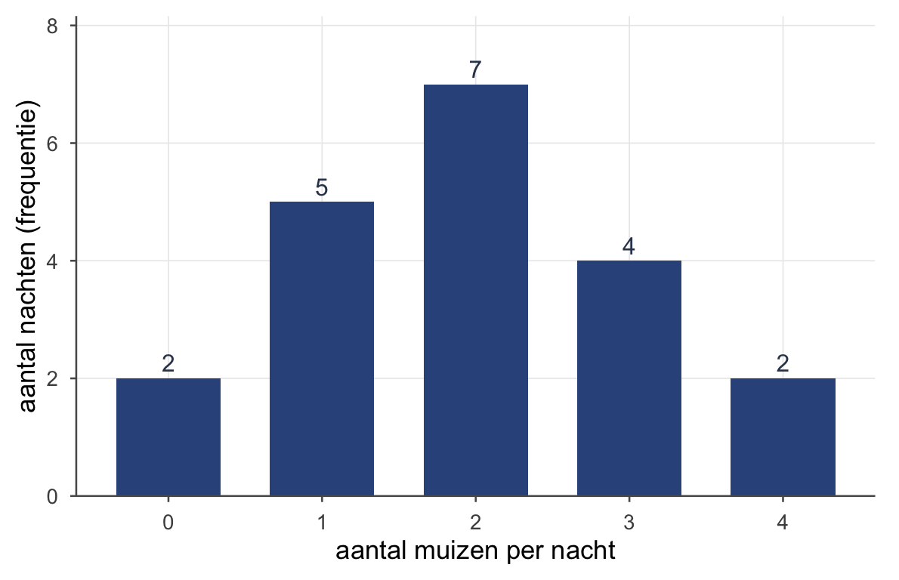
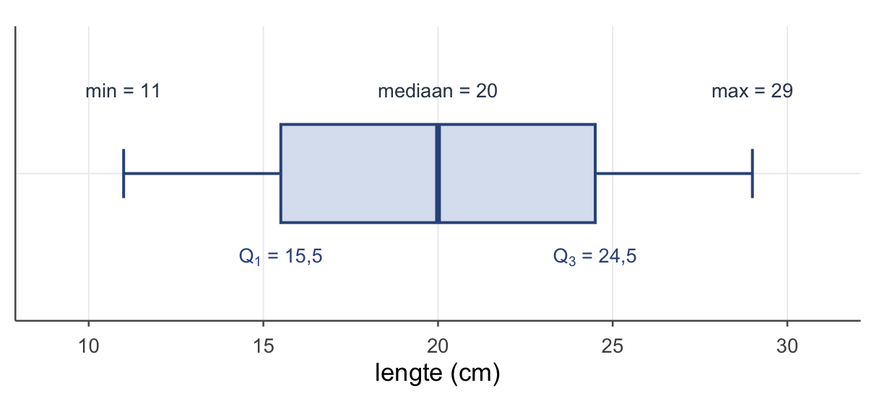
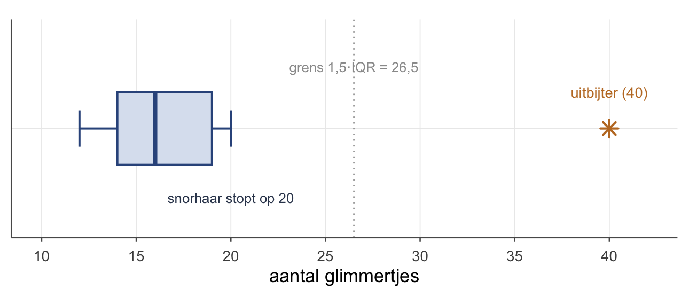

Thema 2 · Verdelingen bekijken
Deel 1 — Beschrijven · het spelletje
Van één gok naar de hele groep
In thema 1 deden we één gok: er kwam een egel binnen, en onze beste schatting was het gemiddelde. Maar één getal — het gemiddelde — verbergt veel. Liggen de egels netjes rond de 20 cm, of zit er een groep kleintjes en een groep groten? Is er eentje die er compleet uitspringt?
Daarvoor moet je naar de hele verdeling kijken: hoe de waarnemingen verspreid liggen. Dat is dit thema. Geen nieuwe gok, wel een beter beeld.
De frequentietabel
Als waarden zich herhalen, is een lijst onhandig. Een frequentietabel telt hoe vaak elke waarde voorkomt. Een uil vangt ’s nachts muizen; over 20 nachten turven we de vangst:
| \(i\) | aantal muizen \(x_i\) | \(f_i\) | % | \(\sum f_i\) | cum. % |
|---|---|---|---|---|---|
| 1 | 0 | 2 | 10 % | 2 | 10 % |
| 2 | 1 | 5 | 25 % | 7 | 35 % |
| 3 | 2 | 7 | 35 % | 14 | 70 % |
| 4 | 3 | 4 | 20 % | 18 | 90 % |
| 5 | 4 | 2 | 10 % | 20 | 100 % |
| 20 | 100 % |
Lees de kolommen:
- Frequentie \(f\) — hoe vaak een waarde voorkomt (7 nachten ving de uil precies 2 muizen).
- Percentage — \(f\) gedeeld door het totaal, maal 100 (denk liever in proporties: \(7/20 = 0{,}35\); een proportie loopt van 0 tot 1, een percentage van 0 tot 100).
- Cumulatief — alles tot en met die rij opgeteld. Op 70 % van de nachten ving de uil twee muizen of minder. Anders gezegd: pak je willekeurig één van de twintig nachten, dan is de kans dat de uil hooguit twee muizen ving \(0{,}70\). Zo wordt “cumulatief” meteen een kans — precies het sommetje dat we vanaf het volgende thema steeds maken.
Diezelfde tabel zie je in één oogopslag als je de frequenties als staafjes tekent — de hoogte is hoe vaak een waarde voorkomt:
Centrum: modus, mediaan, gemiddelde
Drie manieren om “het midden” te vangen.
- Modus — de waarde die het vaakst voorkomt. Bij de uil: 2 muizen (\(f=7\)). Snel, maar zwak als “midden” — al is hij bij categorische data (kleur, soort) juist de énige zinnige centrummaat.
- Mediaan — de middelste waarde. Robuust: hij trekt zich niets aan van uitschieters.
- Gemiddelde — de balanspunt-gok uit thema 1. Gevoelig: één extreme waarde sleurt hem mee.
De mediaan in twee stappen
Bepaal de mediaan altijd in twee vragen: waar zit hij, en wat is hij.
- Waar? Het rangnummer van de mediaan is \(\dfrac{n+1}{2}\). Voor de egels: \(\dfrac{9+1}{2} = 5\) — de vijfde egel op volgorde.
- Wat? De vijfde egel (gesorteerd) meet 20 cm. Mediaan \(= 20\).
Bij een even aantal valt het rangnummer tussen twee egels in; dan neem je hun gemiddelde. Bijvoorbeeld bij zes egels (\(11,\ 14,\ 17,\ 20,\ 23,\ 26\)) is er geen middelste — de mediaan wordt \((17 + 20)/2 = 18{,}5\).
Spreiding: kwartielen, IQR en de boxplot
De mediaan deelt de groep in twee helften. Deel elke helft nóg eens, en je hebt kwartielen.
- \(Q_1\) (eerste kwartiel) = de mediaan van de onderste helft. Rangnummer \(\dfrac{n+1}{4} = 2{,}5\) → tussen de 2e (14) en 3e (17) egel → \(Q_1 = 15{,}5\).
- \(Q_2\) = de gewone mediaan \(= 20\).
- \(Q_3\) (derde kwartiel) = de mediaan van de bovenste helft. Rangnummer \(\dfrac{3(n+1)}{4} = 7{,}5\) → tussen de 7e (23) en 8e (26) → \(Q_3 = 24{,}5\).
De interkwartielafstand vangt de spreiding van de middelste 50 %:
\[\text{IQR} = Q_3 - Q_1 = 24{,}5 - 15{,}5 = 9 \ \text{cm}\]
Samen met het kleinste en grootste getal heb je de five-number summary, en die teken je als boxplot:
\[\underbrace{11}_{\text{min}\,(Q_0)} \;\; \underbrace{15{,}5}_{Q_1} \;\; \underbrace{20}_{\text{mediaan}\,(Q_2)} \;\; \underbrace{24{,}5}_{Q_3} \;\; \underbrace{29}_{\text{max}\,(Q_4)}\]
De box loopt van \(Q_1\) tot \(Q_3\) (de middelste 50 %), met een streep op de mediaan; de “snorharen” lopen naar het kleinste en grootste getal binnen bereik.
Soms is het handig om het zo te zien: het minimum is eigenlijk \(Q_0\) en het maximum \(Q_4\) — de “nulde” en “vierde” kwartielgrens. Dan staat de five-number summary er als één nette reeks \(Q_0, Q_1, Q_2, Q_3, Q_4\): van helemaal onderaan, in stappen van 25 %, naar helemaal bovenaan.

Uitbijters: de 1,5·IQR-regel
Wanneer is een waarneming een echte uitschieter? De vuistregel: alles méér dan \(1{,}5 \times \text{IQR}\) voorbij een kwartiel.
Neem elf eksters en hun verzameling glimmertjes:
\[12,\ 13,\ 14,\ 14,\ 15,\ 16,\ 17,\ 18,\ 19,\ 20,\ 40\]
Hier is \(Q_1 = 14\), \(Q_3 = 19\), dus \(\text{IQR} = 5\) en \(1{,}5 \times \text{IQR} = 7{,}5\).
- Bovengrens: \(Q_3 + 7{,}5 = 26{,}5\).
- De hoarder-ekster met 40 ligt daar ver boven → uitbijter (in de boxplot een los sterretje). De snorhaar stopt bij 20, de laatste waarde binnen de grens.
Let op: een uitbijter is dus niet “een grote waarde”, maar een waarde buiten de grenzen — onder \(Q_1 - 1{,}5\cdot\text{IQR}\) óf boven \(Q_3 + 1{,}5\cdot\text{IQR}\). De ondergrens ligt hier op \(14 - 7{,}5 = 6{,}5\); geen enkele ekster zit daaronder, dus aan de onderkant is er niets aan de hand.

Scheefheid
Vergelijk mediaan en gemiddelde, dan weet je meteen de vorm:
- Symmetrisch — gemiddelde ≈ mediaan (zoals de egels: beide 20).
- Rechts-scheef — een staart naar rechts (de eksters met die ene hoarder); het gemiddelde wordt naar rechts getrokken, dus gemiddelde > mediaan.
- Links-scheef — spiegelbeeld: gemiddelde < mediaan.
Het beeld eronder is steeds hetzelfde: het gemiddelde laat zich naar de staart toe trekken, de mediaan blijft zitten. Eén uitschieter sleept het gemiddelde mee — denk aan de koning in de straat — terwijl de mediaan alleen naar posities kijkt en nauwelijks verschuift. Hoe verder gemiddelde en mediaan uit elkaar liggen, hoe schever de verdeling, en de kant waar het gemiddelde naartoe is getrokken wíjst de staart aan.
Spreiding terugrekenen uit een frequentietabel
Variantie en standaardafwijking (thema 1) werken ook met frequenties — je weegt elke afwijking met hoe vaak hij voorkomt:
\[\bar{y} = \frac{\sum f_i\, y_i}{n} \qquad\qquad s_y^2 = \frac{\sum f_i\,(y_i - \bar{y})^2}{n-1}\]
Dezelfde gedachte als de blauwe vierkantjes; je telt ze alleen met hun frequentie mee in plaats van één voor één.
Oefenen
Tot slot
Een verdeling is meer dan één getal. De mediaan en kwartielen geven een robuust beeld van centrum en spreiding, de boxplot maakt het zichtbaar, en de 1,5·IQR-regel vangt de uitschieters. In het volgende deel gaan we een speciale verdeling van dichtbij bekijken — de normaalverdeling — en leren we onze ruwe scores eindelijk standaardiseren. Want ruw is, zoals je nog gaat horen, ruk.
Werkboek OZP 1 · Thema 2, versie 0.1 (handrekenen & theorie). Doorlopend voorbeeld: de egels.